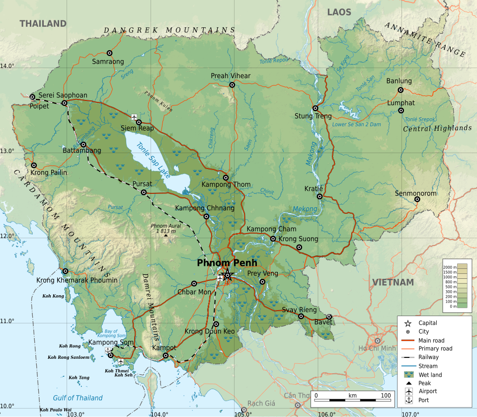
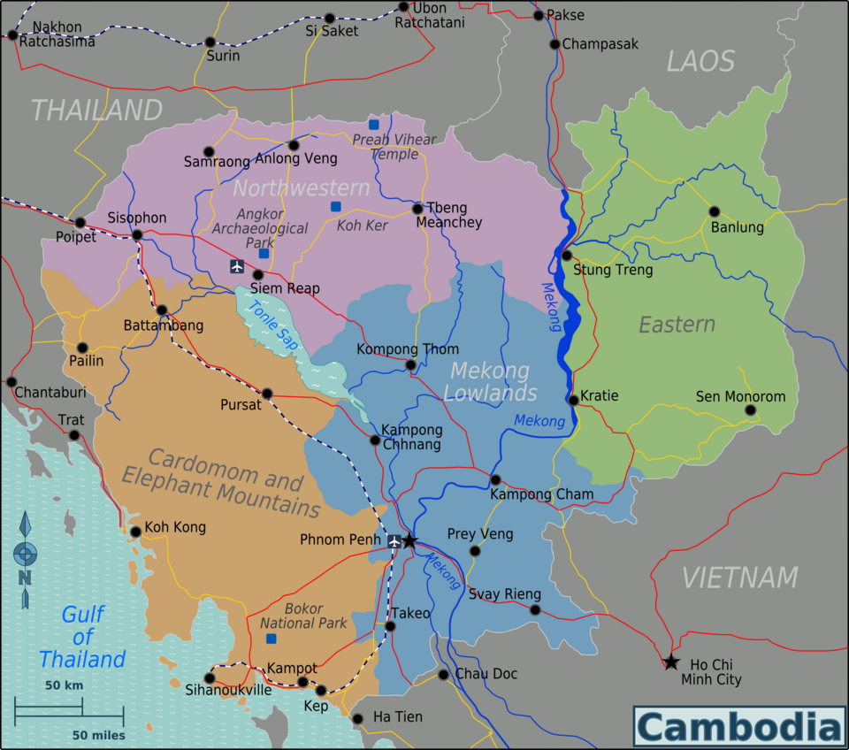
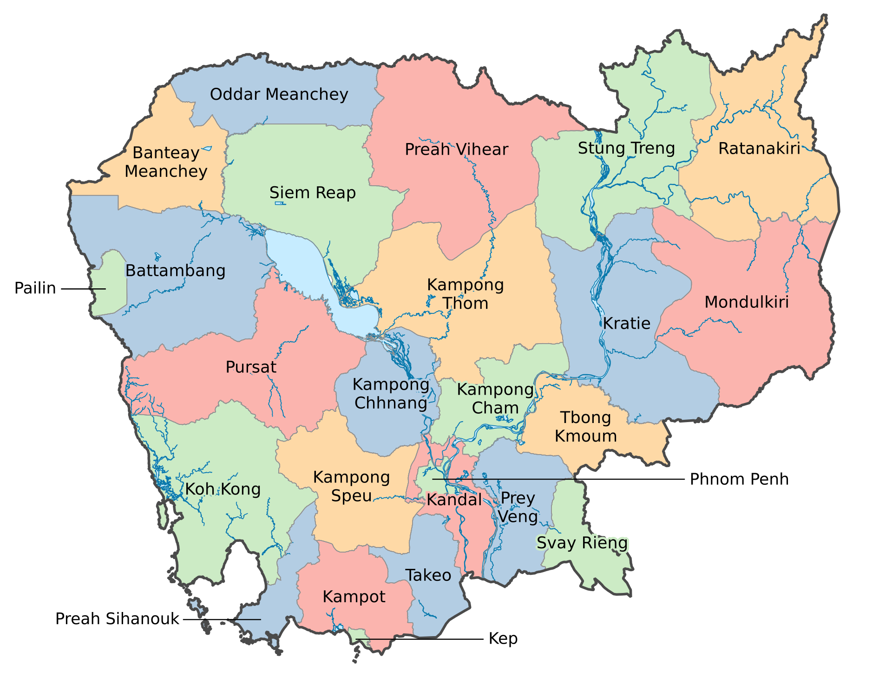

Main article: Geography of Cambodia
Cambodia has an area of 181,035 km2 (69,898 sq mi) and lies entirely within the tropics, between latitudes 10° and 15°N, and longitudes 102° and 108°E. It borders Thailand to the north and west, Laos to the northeast, and Vietnam to the east and southeast. It has a 443 km (275 mi) coastline along the Gulf of Thailand.[14][85]
Cambodia's landscape is characterised by a low-lying central plain that is surrounded by uplands and low mountains and includes the Tonle Sap (Great Lake) and the upper reaches of the Mekong River delta. Extending outward from this central region are transitional plains, thinly forested and rising to elevations of about 200 m (650 ft) above sea level.[101][102] In Cambodia forest cover is around 46% of the total land area, equivalent to 8,068,370 hectares (ha) of forest in 2020, down from 11,004,790 hectares (ha) in 1990. In 2020, naturally regenerating forest covered 7,464,400 ha, and planted forest covered 603,970 ha. Of the naturally regenerating forest 4% was reported to be primary forest (consisting of native tree species with no clearly visible indications of human activity). For the year 2015, 100% of the forest area was reported to be under public ownership.[103][104]
To the north the Cambodian plain abuts a sandstone escarpment, which forms a southward-facing cliff stretching more than 320 km (200 mi) from west to east and rising abruptly above the plain to heights of 180–550 m (600–1,800 ft). This cliff marks the southern limit of the Dângrêk Mountains.[105][106][107]
Flowing south through Cambodia's eastern regions is the Mekong River.[108] East of the Mekong the transitional plains gradually merge with the eastern highlands, a region of forested mountains and high plateaus that extend into Laos and Vietnam.[109] In southwestern Cambodia two distinct upland blocks, the Krâvanh Mountains and the Dâmrei Mountains, form another highland region that covers much of the land area between the Tonle Sap and the Gulf of Thailand.[110]
In this largely uninhabited area, Phnom Aural, Cambodia's highest peak rises to an elevation of 1,813 m (5,949 ft).[111] The southern coastal region adjoining the Gulf of Thailand is a narrow lowland strip, heavily wooded and sparsely populated, which is isolated from the central plain by the southwestern highlands.[112]
The most distinctive geographical feature is the inundations of the Tonle Sap, measuring about 2,590 km2 (1,000 sq mi) during the dry season and expanding to about 24,605 km2 (9,500 sq mi) during the rainy season. This densely populated plain, which is devoted to wet rice cultivation, is the heartland of Cambodia. Much of this area has been designated as a biosphere reserve.[113]


Administrative divisions
| Number | Province | Capital |
|---|---|---|
| bonteay Meanchey | Battambang | Kompong Cham |
| bonteay Meanchey | Battambang | Kompong Cham |
